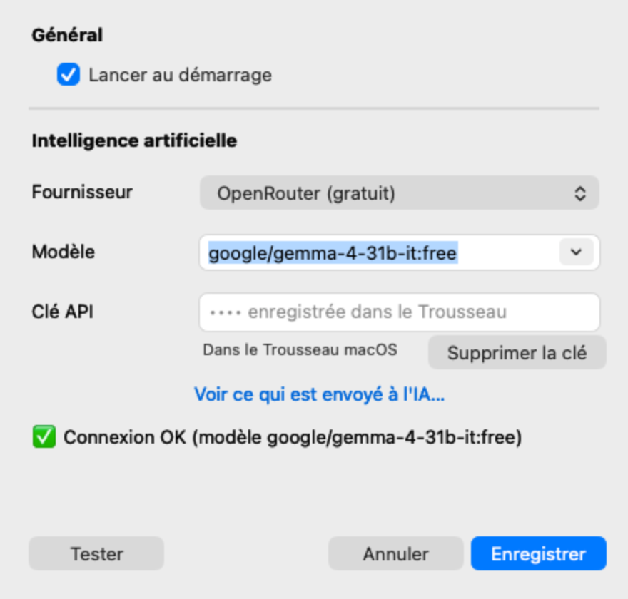

Un bilan en français, pas un mur de chiffres
« avconferenced, c'est quoi ? » L'application répond avec une phrase simple et un verdict. Les processus macOS courants, les aides des navigateurs et des applications Electron sont reconnus localement, sans aucun appel à une IA.
État du Mac ⚠️ Disque presque plein : 8,9 Go libres (4 %) ✅ CPU 14 % · Mémoire 61 % · 48 °C — normal Sécurité ✅ Aucun logiciel suspect détecté Ce qui tourne ✅ Claude Helper ×13 — Normal Partie de l'application Claude (processus de fond). Normal. ✅ ressource-utility ×2 — Normal Cette application, qui surveille ton Mac. Elle est très légère. ✅ claude ×4 — Normal L'application Claude. ✅ mdworker_shared ×16 — Normal Spotlight (la recherche) indexe tes fichiers. Temporaire, ça se calme tout seul. ❓ WhatsApp — Inconnu Inconnu — configure une clé IA pour l'identifier. 👀 Google Chrome Helper ×33 — À surveiller Un onglet ou une extension de Google Chrome. Normal, mais beaucoup de RAM = trop d'onglets ouverts. Il utilise 2,9 Go de RAM : ferme ce qui ne sert pas. ✅ Brave Browser Helper ×13 — Normal Un onglet ou une extension de Brave Browser. Normal, mais beaucoup de RAM = trop d'onglets ouverts. ✅ Google Chrome — Normal Le navigateur Google Chrome. 👉 Conseil : Libère de l'espace disque (Réglages > Général > Stockage).

Ce que ça fait
Un verdict par processus
✅ normal, 👀 à surveiller, 🛑 anormal, ❓ inconnu — dans la liste Processus du menu et dans « Bilan de santé… ». Un processus connu qui pèse lourd passe en « à surveiller ».
Mineurs et logiciels suspects
Noms de mineurs de cryptomonnaie connus, noms système usurpés, emplacements douteux, signature de code, éléments de démarrage automatique. Depuis la liste Processus : afficher dans le Finder ou forcer à quitter, avec confirmation.
Mini-courbes d'une heure
CPU, mémoire et température, un point par minute, gardés en mémoire seulement.
Anthropic, Gemini, OpenAI, OpenRouter, LM Studio
OpenRouter propose un modèle gratuit. Avec LM Studio, tout reste sur votre Mac : rien ne sort sur Internet.
Très peu de jetons
Aucun appel périodique. L'IA ne juge que les processus inconnus, au plus un appel automatique toutes les 30 minutes, réponse limitée à 200 jetons, verdicts mis en cache.
Environ 0,6 % de CPU
Mesuré au repos. Écrit en Rust, binaire de 1,9 Mo, sans icône dans le Dock.
Ce qui est envoyé à l'IA
- Rien sans clé, et rien quand tous les processus sont connus. Dans Réglages, « Voir ce qui est envoyé à l'IA… » affiche le texte exact.
- Une ligne de métriques (CPU, RAM, disque, température), les alertes actives et, pour les seuls processus inconnus, nom CPU % mémoire.
- Un processus jugé suspect : en plus ses signaux, l'état de sa signature et son chemin, dossier personnel remplacé par ~. Jamais de chemin pour un processus normal.
- Jamais : vos clés (stockées dans le Trousseau macOS), le contenu de vos fichiers, votre nom d'utilisateur, votre historique.
- Avec LM Studio, rien n'est envoyé sur Internet.
Installer
- Téléchargez le zip depuis la dernière release.
- Décompressez-le et déplacez Ressource Utility.app dans ~/Applications.
- Lancez-le : l'icône apparaît dans la barre des menus. Réglages… permet de choisir le fournisseur d'IA (facultatif).
Premier lancement : macOS demande confirmation
L'application est signée en « ad hoc » (pas de certificat Apple Developer payant) : au premier lancement, faites un clic droit sur l'application puis Ouvrir, et confirmez.
Pour vous si…
vous voulez comprendre en une phrase pourquoi le ventilateur tourne, ou repérer un processus inhabituel, sans ouvrir le Moniteur d'activité.
Pas pour vous si…
vous cherchez un antivirus complet : les contrôles de sécurité sont des heuristiques locales, pas une analyse de malwares. Seulement macOS.